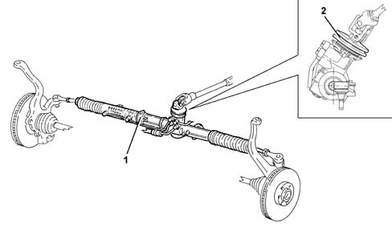

4130A power steering box
- Path
- Descriptions > 41 STEERING > 4130 POWER ASSISTED STEERING > 4130A power steering box
- Kind
- system description
- Applies to
- engines: 1.6 TS, 2.0 TS; all production periods
- Interactive page
- https://sloeber94.github.io/elrnDB-a147/en/#/3022496
Applies to: engines: 1.6 TS, 2.0 TS; all production periods
VIEW OF POWER STEERING BOX

1 - Power steering box 2 - Isolating buffer
The steering box has been designed with over-rated rack and tie-rods, in order to absorb significant stresses, to limit as much as possible the elastic yields of the steering line and thus ensure better driving precision
To avoid the passage of water and dirt and limit noise in the area in contact with the bodywork, there is an insulating buffer which, pressed against the panel, acts as a seal. For connection to the steering wheel, there is a damping joint which minimizes the vibrations transmitted to the steering wheel.
The steering box has a ratio of 68 mm / revolution, to which correspond 2.2 turns of the steering wheel for a total 'between kerbs' turning circle of 11.5.